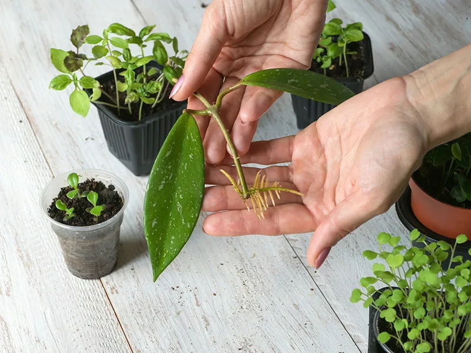

Декоративно-лиственные растения
Декоративно-лиственные растения ценятся за красоту и разнообразие своих листьев. Они создают неповторимую атмосферу в интерьере и радуют глаз круглый год, независимо от цветения.

Особенности ухода за декоративно-лиственными растениями
Декоративно-лиственные растения требуют особого подхода, так как их главное достоинство — листва — очень чувствительна к условиям содержания.
Освещение
Большинство декоративно-лиственных растений предпочитают яркий рассеянный свет. Пестролистные формы особенно нуждаются в хорошем освещении для поддержания контрастной окраски. Однако прямые солнечные лучи могут вызвать ожоги на нежных листьях.

Полив и влажность
Крупнолистные растения испаряют много влаги, поэтому нуждаются в регулярном поливе. При этом важно не переувлажнять почву. Высокая влажность воздуха — залог здоровья и красоты листьев. Регулярное опрыскивание особенно важно в отопительный сезон.
Подкормка
Для поддержания декоративности листьев необходимы регулярные подкормки с преобладанием азота. В период активного роста подкармливайте растения каждые 2 недели, зимой — 1 раз в месяц.
Размножение и пересадка
Декоративно-лиственные растения обычно размножают вегетативными способами, что позволяет сохранить сортовые особенности окраски листьев.
Способы размножения
Черенкование: Самый распространенный способ. Стеблевые или верхушечные черенки укореняют в воде или легком субстрате.
Деление куста: Подходит для растений, образующих розетки или кусты (аглаонема, спатифиллум).
Воздушные отводки: Используется для растений с одревесневшими стеблями (фикусы, диффенбахия).
Пересадка
Молодые растения пересаживают ежегодно весной, взрослые — раз в 2-3 года. Используйте питательный, но хорошо дренированный грунт. Для крупных экземпляров ограничиваются заменой верхнего слоя почвы.
Распространенные проблемы и решения
Желтеющие листья
Причина: Перелив, недостаток света, естественное старение
Решение: Отрегулируйте полив, обеспечьте достаточное освещение
Сухие кончики листьев
Причина: Низкая влажность воздуха, пересушка почвы
Решение: Увеличьте влажность, регулярно опрыскивайте
Потеря пестроты
Причина: Недостаток света, избыток азота
Решение: Увеличьте освещенность, используйте сбалансированные удобрения
Вредители
Причина: Паутинный клещ, щитовка, тля
Решение: Регулярный осмотр, обработка инсектицидами при необходимости
Советы по выбору растений
При выборе декоративно-лиственного растения учитывайте условия вашего помещения:
- Для светлых помещений: Кротон, фикус лирата, каладиум
- Для полутени: Аглаонема, сансевиерия, замиокулькас
- Для влажных помещений: Калатея, маранта, алоказия
- Для начинающих: Эпипремнум, сциндапсус, хлорофитум
- Для опытных цветоводов: Алоказия, калатея, строманта
Правильно подобранное растение будет радовать вас многие годы своей декоративной листвой!